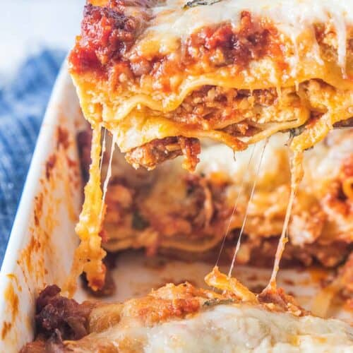

Your New Favorite Lasagna

Best lasagna recipe you will ever need. (Trust me)
“Thus, the premise of constructive capitalism implies that language is
capable of deconstruction. An abundance of theories concerning a mythopoetical
totality may be found."
What you will need
For the Sauce
- Sweet Italian turkey or pork sausage
- Ground beef
- Onion
- Garlic
- Canned crushed tomatoes
- Tomato paste
- Canned tomato sauce
- Water
- Sugar
- Dried basil leaves
- Fennel seeds
- Italian seasoning
- Salt & Pepper
- Fresh parsley
For layering the Lasagna
- Lasagna noodles
- Ricotta cheese
- Egg
- Fresh parsley
- Mozzarella cheese
- Grated Parmesan cheese
How to layer the Lasagna
- Layer sauce on the bottom of the pan.
- Top with noodles.
- Top with ricotta cheese mixture.
- Sprinkle on mozzarella cheese.
- Sprinkle on Parmesan cheese.
- Add more sauce.
- Repeat layers starting with another layer of noodles.
- Spread on the rest of the ricotta.
- Sprinkle on more mozzarella.
- Add more Parmesan
- Layer on more sauce.
- A final top layer of noodles, sauce, and the rest of the Parmesan and Mozzarella cheese.
How to make it!!!
Make the Sauce
- In a large Dutch oven, cook sausage, ground beef, onion, and garlic over medium heat until cooked through and browned.
- Add the crushed tomatoes, tomato paste, tomato sauce, and water, and stir everything together.
- Add sugar, basil, fennel seeds (if using), Italian seasoning, 2 teaspoons salt, pepper, and 2 Tablespoons parsley, and stir to combine.
- Simmer, covered, for at least 1½ hours, stirring occasionally. I usually try to simmer for as long as possible.
Assemble Lasagna and bake
- If using regular lasagna noodles, cook according to package instructions and drain.
- In a bowl, stir together ricotta cheese, egg, remaining parsley, and ½ teaspoon salt.
- Preheat oven to 375 F.
- To layer the lasagna, spread 1½ cups of the sauce in the bottom of a 9×13 inch baking dish. Arrange a single layer of noodles over meat sauce. Spread with one half of the ricotta cheese mixture. Top with a third of mozzarella cheese. Sprinkle with ¼ cup Parmesan cheese.
- Spoon another 1½ cups meat sauce over the cheese.
- Add another layer of noodles, the rest of the ricotta mixture, half of the remaining mozzarella, and another 1/4 cup Parmesan cheese.
- Add another layer of 1 1/2 cups of sauce and a final layer of noodles.
- Top with another 1 1/2 cups sauce and the remaining mozzarella and Parmesan cheese.
- Cover with foil and bake in preheated oven for 25 minutes.
- Remove foil, and bake an additional 25 minutes.
- Cool for 15 minutes before serving.